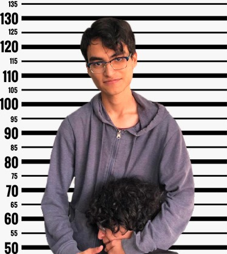

Nombre:
Mario Alonso Meza Alvidrez
¿Quién soy y lo que me gusta?
Actualmente soy estudiante de ingeniería en sistemas computacionales, tengo 21 años, me gusta jugar videojuegos, también me gusta
estudiar idiomas, actualmente estoy estudiando ruso, por otro lado, me interesa la política internacional,
los conflictos (pasados) y la historia en general.
Me gusta comer comida, mi meta es encontrar los mejores elotes de todo Chihuahua, hasta tengo mi lista.

Nombre:
Emmanuel Chavira Holguin
¿Quién soy y lo que me gusta?
Tengo 20 años, soy estudiante de la carrera de Ingeniería en Sistemas Computacionales,
actualmente residiendo en Chihuahua, me gustan los videojuegos, las series, el anime y la edición de videos.

Nombre:
Nicole Johana Bibiano Ochoa
¿Quién soy y lo que me gusta?
Tengo 20 años, cumplo el 2 de marzo, estudio ingeniería en sistemas, me gusta mucho ver películas y series,
ya sea de suspenso o infantiles. Juego cosas independientes y me gusta también la musica indie.
Aparte me agrada el diseño gráfico y los gatitos.

Nombre:
Luis Antonio Amador Estrada
¿Quién soy y lo que me gusta?
Hola, soy Luis, tengo 21 años y estudio en el Tec de Chihuahua 2, entre las cosas que me gustan esta ver series y películas
de Netflix, estudiar y programar.